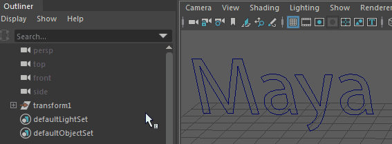

借助菜单项，可通过将 Adobe Illustrator 路径作为曲线加载到
Maya 中来使用 2D 向量数据创建 3D 动画模型，或通过 Adobe Illustrator 文件生成多边形曲面。
重要： Maya 仅支持 Adobe Illustrator 8 文件。请确保在 Illustrator 中保存文件时在“文件 > 另存为”(File > Save As)窗口中选择 Illustrator 8。
如果对文件进行了更改，可以重新加载该文件。也可以在创建对象之后在“属性编辑器”(Attribute Editor)中编辑 Adobe Illustrator 文件的路径，然后将自动应用历史和倒角信息。
若要使用此功能，请确保满足以下条件：
- 在 Adobe Illustrator 中，文本必须转化为轮廓（在 Illustrator 中，选择文本，然后选择）。
- 确保在保存文件前删除 Illustrator 中的所有参考线，包括隐藏的参考线。这些都将作为曲线加载到 Maya 中，这将给倒角操作造成问题。
创建 Adobe Illustrator 对象
- 选择。
- 选择 .ai 文件。
- 单击“确定”(OK)。
更新 Adobe Illustrator 对象
- 选择 Adobe Illustrator 对象。
- 打开“属性编辑器”(Attribute Editor)。
- 在“IllustratorForBevel”选项卡中，展开“文件属性”(File Attributes)区域。
- 单击“重新加载”(Reload)。
初始“类型”(Type)选项可控制是否导入 Adobe Illustrator 对象作为曲线或多边形曲面（倒角）。如果选择“曲线”(Curves)，则不需要其他设置，但“倒角”(Bevel)有许多选项。另请参见导入向量数据作为曲线或生成多边形曲面和“倒角 +”(Bevel Plus)选项。
导入 Illustrator EPS 文件
在开始之前，请确保您的 .eps 文件是以 Adobe Illustrator 8 格式保存的。
- 选择
- 在“导入选项”(Import Options)的“文件类型”(File Type)菜单中，选择 EPS。
- 选择 .eps 文件并单击“导入”(Import)。
EPS 文件导入为
Transform1。要选择它，请在“大纲视图”(Outliner)中单击。
